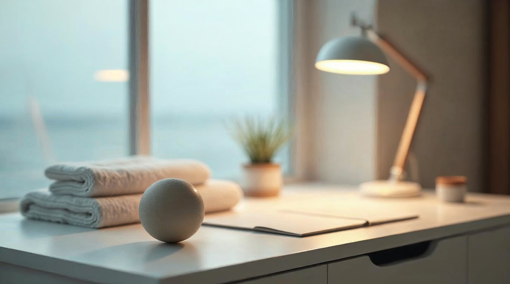
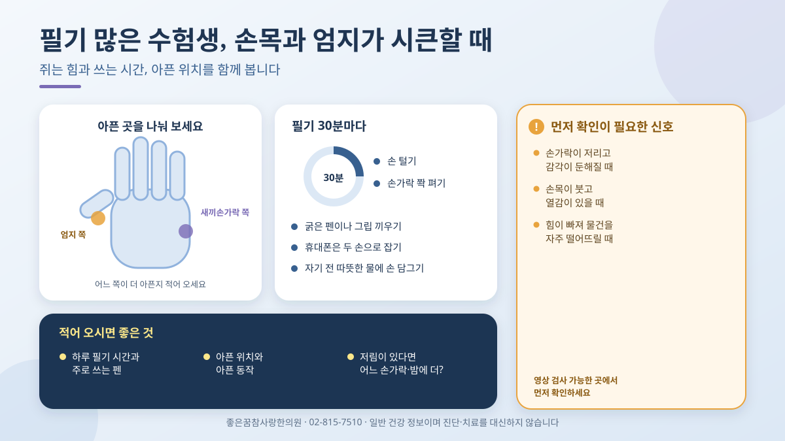

이종호 한의사 감수좋은꿈참사랑한의원 대표원장 (한의사 면허번호 19769)발행 2026-11-24 · 수정 2026-11-26
이 글의 차례
- 왜 이런 불편이 생길 수 있나요
- 시험이 가까워질수록 손목이 더 아픈 건 왜일까요?
- 먼저 이렇게 여쭙니다
- 일상에서 먼저 해 볼 수 있는 것
- 엄지 쪽 시큰함과 손목 저림은 어떻게 다른가요?
- 상황별 예시
- 스스로 점검해 보세요
- 펜 쥐는 법, 이렇게 점검해 보세요
- 손목을 쉬게 하는 가벼운 동작이 있나요?
- 시험이 몇 주 남지 않았다면 어떻게 버틸까요?
- 한의원에서 함께 살필 수 있는 경우
- 책상과 의자는 어떻게 맞추면 좋을까요?
- 얼마나 지켜보고 언제 상담할까요
- 첫 진료에서는 무엇을 순서대로 보나요?
- 이렇게 기록해 오시면 상담이 쉬워집니다
- 이런 증상은 먼저 확인이 필요합니다
- 관련 글
펜을 세게 쥐고 오래 쓰는 습관을 바꾸고 30분마다 손을 쉬게 하면 손목과 엄지 부담을 줄이는 데 도움이 될 수 있습니다. 노량진에서 답안 연습과 필기 정리를 반복하다 엄지 쪽 손목이 시큰하다는 수험생이 많습니다.
필기 양을 조절하고 하루 이틀 쉬면 가라앉는 시큰함이라면 펜과 쥐는 습관부터 바꿔 볼 수 있습니다. 2~3주 넘게 같은 동작에서 아프거나 엄지를 움직일 때 걸리는 느낌이 늘어난다면 한 번 살펴보시는 것이 좋습니다.
왜 이런 불편이 생길 수 있나요
- 펜을 세게 쥐고 오래 쓰면 엄지를 움직이는 힘줄과 손목 주변에 부담이 반복해서 쌓일 수 있습니다.
- 시험 답안처럼 빠르게 많이 쓰는 연습을 하면 손가락 끝에 힘을 주고 손목을 꺾은 채 쓰기 쉽습니다.
- 공부 사이에 휴대폰을 한 손으로 쥐고 엄지로 화면을 넘기는 시간이 길면 같은 부위가 쉬지 못합니다.
- 책상과 의자 높이가 맞지 않으면 손목을 꺾은 채로 쓰게 되어 불편이 커지기도 합니다.
- 겨울 독서실에서 손이 차가우면 손가락이 굳어 펜을 더 세게 쥐게 된다는 분이 있습니다.
- 목과 어깨가 굳어 팔 전체가 긴장되어 있으면 손끝까지 무겁게 느끼는 분도 있습니다.
- 엄지 쪽 손목이 시큰하면 엄지를 움직이는 힘줄 쪽을, 손가락이 저리면 손목 가운데를 지나는 신경 쪽을 나눠 생각해 봅니다.
시험이 가까워질수록 손목이 더 아픈 건 왜일까요?
손목과 엄지의 힘줄은 꾸준히 쓰는 것보다 갑자기 늘어난 양에 더 예민하게 반응합니다. 평소에는 괜찮던 필기량이 모의고사와 답안 연습으로 몇 주 사이 두세 배로 늘면, 힘줄이 회복할 틈 없이 같은 일을 반복하게 됩니다.
여기에 시험 긴장으로 어깨와 팔에 힘이 들어가고, 잠이 줄어 몸이 쉬는 시간이 짧아지는 일이 함께 옵니다. 한의학에서는 이렇게 피로가 겹친 때 근육과 힘줄이 쉽게 굳고 회복이 더디다고 보아, 손목과 함께 잠과 긴장 정도도 같이 여쭙습니다.
그래서 필기량이 늘기 시작하는 시점을 기억해 두시면 도움이 됩니다. 언제부터 양이 늘었고 그 뒤 며칠 만에 시큰함이 시작됐는지 알면, 앞으로 비슷한 시기가 올 때 미리 쉬는 간격을 늘려 대비할 수 있습니다.
먼저 이렇게 여쭙니다
- 하루에 필기하는 시간이 얼마나 되나요?
- 펜을 세게 쥐는 편인가요?
- 엄지 쪽과 새끼손가락 쪽 중 어디가 더 아픈가요?
- 손가락이 저린다면 어느 손가락이고, 밤에 더 심한가요?
- 시험이 가까워지며 필기 양이 갑자기 늘었나요?
- 휴대폰이나 태블릿도 오래 쓰나요?
- 아침에 손가락이 뻣뻣하거나, 손목을 짚고 일어날 때 아픈가요?
- 예전에 손목을 삐거나 넘어지며 짚은 적이 있나요?
- 다시 오신 분께는 지난번 이후 펜과 쉬는 간격을 바꿔 보셨는지부터 이어서 여쭙니다.
일상에서 먼저 해 볼 수 있는 것
- 손에 맞는 굵은 펜이나 그립 끼워 쓰기
- 30분 필기하면 손을 털고 손가락을 쫙 펴기
- 책상 높이를 맞춰 손목을 꺾지 않고 팔뚝이 책상에 편히 닿게 앉기
- 답안 연습은 몰아서 하지 말고 오전과 오후로 나눠 쓰기
- 휴대폰은 두 손으로 잡고 엄지 사용 줄이기
- 추운 날에는 손을 따뜻하게 데운 뒤 필기를 시작하기
- 자기 전 따뜻한 물에 손을 잠시 담그기
- 무거운 가방이나 물병을 아픈 손으로 들지 않고 반대 손이나 양손으로 나눠 들기
- 문제집을 넘길 때 엄지로 튕기듯 넘기지 말고 손바닥 전체로 넘기기
엄지 쪽 시큰함과 손목 저림은 어떻게 다른가요?
필기를 많이 하는 수험생이 손목이 불편하다고 할 때, 아픈 자리와 느낌을 나눠 보면 살필 곳이 꽤 달라집니다. 저는 손을 펴 보시게 하고 손가락으로 아픈 곳을 짚어 달라고 먼저 부탁드립니다.
- 엄지 쪽 손목 옆이 시큰하고, 엄지를 접은 채 손목을 새끼손가락 쪽으로 꺾을 때 찌릿하다면 엄지를 움직이는 힘줄이 지나는 길을 먼저 봅니다.
- 엄지 아래 손바닥 쪽 도톰한 곳 깊숙이 아프고, 병뚜껑을 비틀거나 집게처럼 꼭 집을 때 불편하다면 엄지 뿌리 관절 쪽을 함께 봅니다.
- 엄지, 검지, 중지 끝이 저리고 밤이나 새벽에 더 심하며 손을 털면 잠시 풀린다면 손목 가운데를 지나는 신경 쪽을 생각해 봅니다.
- 손등이나 손목 쪽에 말랑한 혹이 만져진다면 그 크기와 통증 변화를 따로 살펴봅니다.
- 새끼손가락 쪽 손목이 아프다면 펜을 쥘 때 손목을 바깥으로 꺾는 습관이나 책상 모서리에 눌리는 자세를 함께 봅니다.
이 구분은 진찰의 출발점일 뿐이고, 실제로는 두 가지가 겹쳐 있는 경우도 있습니다. 그래서 말로 들은 내용과 함께 직접 움직여 보고 눌러 보며 확인하고, 필요하다고 판단될 때 초음파로 힘줄 주변을 봅니다.
상황별 예시
- 예를 들어 서술형 답안을 하루 몇 장씩 쓰는 임용시험 수험생의 경우, 시험이 가까워질수록 쓰는 양이 갑자기 늘어 엄지 쪽 손목이 시큰해질 수 있습니다. 답안 연습을 오전과 오후로 나누고 그 사이에는 손을 덜 쓰는 공부(읽기, 듣기)를 끼워 넣는 방법을 함께 정리해 볼 수 있습니다.
- 예를 들어 강의를 들으며 손으로 빠르게 받아 적고, 쉬는 시간에는 휴대폰으로 인강 진도를 확인하는 공무원 수험생의 경우, 엄지가 하루 종일 쉬지 못합니다. 쉬는 시간만큼은 휴대폰을 두 손으로 잡거나 내려놓는 것부터 살펴봅니다.
- 예를 들어 밤에 손가락이 저려 깨는 일이 생긴 수험생의 경우, 엄지 쪽 시큰함과는 살필 곳이 다를 수 있어 어느 손가락이 저린지, 손을 털면 덜해지는지부터 여쭙습니다.
스스로 점검해 보세요
- 펜을 쥔 손가락 끝이 하얗게 될 만큼 세게 쥔다
- 필기를 한 시간 넘게 쉬지 않고 이어 간다
- 엄지를 움직이거나 병뚜껑을 열 때 엄지 쪽 손목이 시큰하다
- 공부 사이 휴대폰을 한 손으로 쥐고 엄지로 오래 넘긴다
- 아침에 손가락이 뻣뻣하거나 손목이 무겁다
- 손가락이 저리거나 힘이 빠져 펜을 자주 놓친다
앞의 다섯 가지는 펜과 쥐는 힘, 쉬는 간격부터 바꿔 볼 신호입니다. 마지막 항목은 손목 가운데를 지나는 신경 쪽을 함께 살펴야 할 수 있는 신호입니다.
펜 쥐는 법, 이렇게 점검해 보세요
펜을 쥐는 모양은 오래된 습관이라 스스로는 알아차리기 어렵습니다. 공부하는 모습을 휴대폰으로 옆에서 짧게 찍어 보면 생각보다 손목이 많이 꺾여 있거나 손가락에 힘이 몰려 있는 것을 발견하는 분이 많습니다.
- 펜을 쥔 손가락 마디가 하얗게 될 만큼 세게 누르고 있지 않은지
- 엄지가 검지 위로 겹쳐 펜을 감싸 쥐고 있지 않은지
- 손목이 위로 꺾이거나 안쪽으로 말린 채 쓰고 있지 않은지
- 펜촉 가까이를 너무 짧게 잡고 있지 않은지
- 글씨를 쓸 때 손목만 움직이고 팔뚝은 책상에 고정돼 있지 않은지
이 가운데 하나라도 해당된다면 펜을 조금 더 뒤쪽으로 잡고, 손가락보다 팔뚝 전체로 글씨를 이끄는 느낌으로 써 보세요. 처음에는 글씨가 흔들릴 수 있지만 며칠 연습하면 손이 덜 지친다는 분이 많습니다. 잉크가 잘 나오는 펜으로 바꾸면 누르는 힘도 함께 줄어듭니다.
손목을 쉬게 하는 가벼운 동작이 있나요?
30분 필기한 뒤 1분 정도 손을 쉬게 하는 동작을 넣어 보세요. 모두 아프지 않은 범위에서 천천히 합니다.
- 주먹을 가볍게 쥐었다가 손가락을 쫙 펴기를 열 번쯤 반복하기
- 손바닥을 마주 대고 가슴 앞에서 천천히 아래로 내려 손목 앞쪽을 부드럽게 펴기
- 손을 아래로 늘어뜨리고 가볍게 털어 손가락과 팔의 힘 빼기
- 어깨를 한 번 크게 으쓱했다 내리며 목과 팔 전체의 긴장 풀기
엄지 쪽이 시큰할 때 엄지를 손바닥 안에 넣고 손목을 세게 꺾어 늘리는 동작은 오히려 아픈 자리를 자극할 수 있습니다. 동작 중 통증이 올라오면 그 동작은 빼고, 진료 때 지금 상태에 맞는 동작을 다시 정해 드립니다.
시험이 몇 주 남지 않았다면 어떻게 버틸까요?
시험이 가까울수록 필기량은 줄이기 어렵습니다. 이 시기에는 손을 덜 쓰는 것보다 같은 양을 나눠 쓰는 방법에 집중하는 것이 현실적입니다.
- 하루 답안 연습을 한 번에 몰지 말고 두세 번으로 나누기
- 손으로 다시 정리하던 요약 노트 일부는 소리 내어 읽거나 녹음해 듣는 방식으로 바꾸기
- 쉬는 시간에는 휴대폰을 내려놓고 손을 완전히 쉬게 하기
- 잠자기 전 손을 따뜻한 물에 잠시 담그고, 엄지를 무리하게 쓰는 일은 하지 않기
시험 당일 손이 아플까 걱정된다면, 그날 쓸 펜과 같은 것으로 미리 연습해 손에 익혀 두세요. 시험 몇 주 전부터 불편이 늘고 있다면 시험이 끝날 때까지 참기보다 일찍 한 번 살펴보는 쪽을 권합니다.

한의원에서 함께 살필 수 있는 경우
- 필기 뒤 손목이 시큰한 경우 아픈 위치와 손 쓰는 습관을 함께 살핍니다.
- 엄지를 움직일 때 걸리는 느낌이 있는 경우 필요하다고 판단될 때 초음파로 확인할 수 있습니다.
- 목과 어깨가 함께 굳어 팔이 무거운 경우 자세를 함께 살핍니다.
좋은꿈참사랑한의원에서는 첫 방문 때 맥부터 짚어 보며 하루 필기 시간과 시험 일정, 아픈 위치와 아픈 동작을 여쭙습니다. 그 뒤 엄지와 손목을 움직여 보며 어디서 걸리는지, 누르면 아픈 자리와 저린 손가락을 확인하고, 필요하다고 판단될 때 초음파로 손목 힘줄 주변을 살핍니다.
침·약침·추나·온열 가운데 지금 상태에 맞는 방법을 정하고, 오래 이어진 힘줄 주변 통증이라면 체외충격파를 쓸지도 진찰 후 함께 판단합니다. 귀가 전에는 펜 쥐는 법과 쉬는 간격, 다음 방문 때 다시 확인할 동작을 함께 정해 드립니다.
책상과 의자는 어떻게 맞추면 좋을까요?
독서실이나 스터디카페의 책상은 높이를 고를 수 없는 경우가 많습니다. 이럴 때는 의자 높이와 팔 받침으로 손목 각도를 맞춰 볼 수 있습니다.
- 의자에 앉아 팔꿈치를 90도쯤 굽혔을 때 팔뚝이 책상 위에 편하게 놓이는 높이 찾기
- 의자가 낮아 손목이 위로 꺾인다면 방석을 깔아 높이 올리기
- 책상 모서리가 손목 안쪽을 누른다면 얇은 수건을 접어 손목 아래 받치기
- 문제집은 몸 정면에 두고, 쓰는 손 쪽으로 살짝 기울여 손목을 비틀지 않게 하기
발이 바닥에 닿지 않는다면 발받침도 함께 두세요. 몸이 안정되어야 팔과 손에 들어가는 힘이 줄어듭니다.

얼마나 지켜보고 언제 상담할까요
- 펜과 쉬는 간격을 바꾼 뒤 1~2주는 아픈 동작이 어떻게 달라지는지 지켜보세요.
- 2~3주가 지나도 엄지를 움직일 때 같은 자리가 시큰하다면 상담을 권합니다.
- 시험이 몇 주 앞이라 필기를 줄이기 어렵다면 아픈 동작이 늘기 전에 일찍 상담해 보세요.
첫 진료에서는 무엇을 순서대로 보나요?
처음 오시면 맥부터 짚고, 시험 일정과 하루 필기량, 시큰함이 시작된 시기를 먼저 듣습니다. 그다음 평소 쓰는 펜을 쥐어 보시게 하고, 엄지와 손목을 여러 방향으로 움직여 어느 동작에서 걸리는지 확인합니다.
누르면 아픈 자리, 저린 손가락, 손의 힘이 양쪽에서 차이가 나는지도 함께 봅니다. 필요하다고 판단될 때 초음파로 힘줄 주변이 붓거나 두꺼워졌는지 살피고, 그 결과를 바탕으로 침·약침·추나·온열 가운데 지금 상태에 맞는 방법을 정하고, 오래 이어진 통증인지 최근에 시작된 통증인지도 함께 고려합니다.
드시는 진통제나 바르는 약, 손목 보호대가 있다면 가져오시거나 이름을 알려 주세요. 수험 기간에는 진료 일정도 공부 시간표 안에 들어가야 하니, 오실 수 있는 요일과 시간대를 함께 정해 두면 이어서 살피기가 수월합니다.
이렇게 기록해 오시면 상담이 쉬워집니다
- 하루 필기 시간과 주로 쓰는 펜의 종류(펜을 가져오셔도 됩니다)
- 시험 일정과 하루 답안 연습 양
- 아픈 위치(엄지 쪽, 새끼손가락 쪽, 손목 가운데)와 아픈 동작
- 손가락 저림이 있다면 어느 손가락인지, 밤에 더 심한지
- 하루 휴대폰·태블릿 사용 시간
- 필기량이 갑자기 늘기 시작한 날과 시큰함이 처음 느껴진 날
- 펜 쥐는 모습을 옆에서 찍은 짧은 영상
- 아침에 일어났을 때와 공부를 마친 밤의 손목 느낌 차이
이런 증상은 먼저 확인이 필요합니다
- 손가락 감각이 둔해지거나 힘이 빠져 물건을 자주 놓치는 경우
- 손목이 붓고 열감이 있는 경우
이런 신호가 있으면 한의원보다 가까운 병원이나 응급실을 먼저 찾으세요.
관련 글
- 엄지 쪽 손목이 아파 휴대폰 쥐기도 불편할 때는 어떻게 살피나요?
- 밤에 손이 저려 깰 때 손목 초음파로 무엇을 확인하나요?
- 수험생이 오래 앉아 공부하면 목과 허리가 아픈 것은 어떻게 살피나요?

여쭙는 것
- 하루에 필기하는 시간이 얼마나 되나요?
- 펜을 세게 쥐는 편인가요?
- 엄지 쪽과 새끼손가락 쪽 중 어디가 더 아픈가요?
생활에서 해 볼 것
- 손에 맞는 굵은 펜이나 그립 끼워 쓰기
- 30분 필기하면 손을 털고 손가락을 쫙 펴기
- 책상 높이를 맞춰 손목을 꺾지 않고 팔뚝이 책상에 편히 닿게 앉기
한의원에서 함께 살필 것
- 필기 뒤 손목이 시큰한 경우 아픈 위치와 손 쓰는 습관을 함께 살핍니다.
- 엄지를 움직일 때 걸리는 느낌이 있는 경우 필요하다고 판단될 때 초음파로 확인할 수…
- 목과 어깨가 함께 굳어 팔이 무거운 경우 자세를 함께 살핍니다.
먼저 확인이 필요한 신호
- 손가락 감각이 둔해지거나 힘이 빠져 물건을 자주 놓치는 경우
- 손목이 붓고 열감이 있는 경우
한눈에 보는 표
| 구분 | 핵심 |
|---|---|
| 여쭙는 것 | 하루에 필기하는 시간이 얼마나 되나요? 펜을 세게 쥐는 편인가요? |
| 생활에서 해 볼 것 | 손에 맞는 굵은 펜이나 그립 끼워 쓰기 30분 필기하면 손을 털고 손가락을 쫙 펴기 |
| 한의원에서 함께 살필 것 | 필기 뒤 손목이 시큰한 경우 아픈 위치와 손 쓰는 습관을 함께 살핍니다. 엄지를 움직일 때 걸리는 느낌이 있는 경우 필요하다고 판단될 때 초음파로 확인할 수 있습니다. |
| 먼저 확인이 필요한 신호 | 손가락 감각이 둔해지거나 힘이 빠져 물건을 자주 놓치는 경우 손목이 붓고 열감이 있는 경우 |
자주 묻는 질문
손목 보호대를 차고 공부해도 되나요?
잠깐 쉬게 하는 데 도움이 될 수 있지만 계속 차기보다 사용 시간을 정해 쓰는 것을 권합니다.
시험이 얼마 안 남았는데 필기를 줄일 수 있을까요?
줄이기 어렵다면 쉬는 간격을 짧게 자주 두고 펜을 바꾸는 것부터 해 보세요.
펜을 바꾸면 글씨체가 달라질까 걱정돼요.
처음 며칠은 어색할 수 있지만 손에 맞는 굵기의 펜이 오래 쓰기에는 덜 지칩니다. 시험 때 쓸 펜과 비슷한 것으로 미리 연습해 두시기를 권합니다.
진료 시간은 어떻게 되나요?
좋은꿈참사랑한의원은 평일 09:30~20:00(점심 13:00~14:00), 토·일·공휴일 09:30~15:00에 진료합니다.
좋은꿈참사랑한의원은 재진 때 지난번 이야기부터 이어서 여쭙니다. 진료시간과 예약은 오시는 길에서 확인하세요.
어디서 상담받을 수 있나요?
좋은꿈참사랑한의원은 서울 동작구 만양로2길 2 신성빌딩 3층·5층(서울 동작구 상도동, 7호선 상도역 3번 출구 근처)에 있습니다. 한의사 3명(이종호 대표원장, 조영기 수석진료원장, 정원영 진료원장)이 진료합니다. 진료시간은 평일 09:30~20:00(점심 13:00~14:00), 토·일·공휴일 09:30~15:00이며, 방문 전 전화로 확인을 권합니다. 예약은 네이버 예약, 카카오톡 상담, 전화 02-815-7510로 받습니다.
이 글은 일반적인 건강 정보이며 개인의 진단이나 치료를 대신하지 않습니다. 증상이 있거나 복용 중인 약이 있다면 진료를 통해 확인하세요. 치료 효과는 개인마다 다를 수 있습니다.
작성 기준: 일반적으로 알려져 있는 건강 정보를 참고해 정리했습니다(대표원장 감수). 증상 기록은 1~2주 동안 하루 1회, 비슷한 시간에 적어 오시면 지난 상태와 비교하기 쉽습니다.